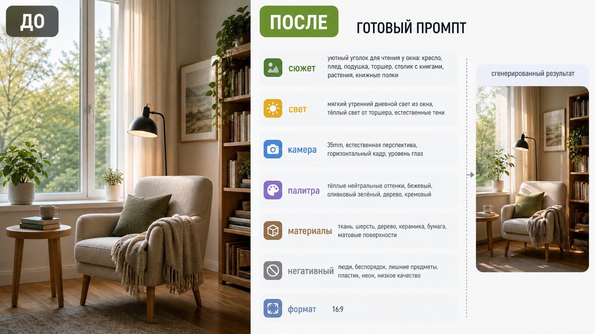

Промтзилла
Этот сценарий нужен, когда нравится картинка и хочется понять, каким запросом можно получить похожий визуал без прямого копирования.

Пошаговая инструкция
- 1Загрузи изображение, стиль которого хочешь повторить или адаптировать.
- 2Открой инструмент превращения фото в промпт.
- 3Вставь промт ниже и попроси структурировать ответ по блокам.
- 4Удали из результата имена брендов, авторов и узнаваемых персонажей, если они не нужны.
- 5Сгенерируй новую картинку по промпту и уточняй свет, композицию или формат.
Пример результата
На обложке показан типичный сценарий: слева исходное фото, справа результат, который можно получить через инструмент превращения фото в промпт.
Промт
RU
Разбери изображение и преврати его в подробный промпт для генерации похожей картинки. Сделай структуру: 1. Короткое описание сюжета. 2. Главные объекты и их расположение. 3. Композиция и ракурс. 4. Свет, время суток и настроение. 5. Камера, объектив, глубина резкости, если это похоже на фото. 6. Цветовая палитра. 7. Материалы, фактуры и важные детали. 8. Стиль изображения. 9. Формат кадра и соотношение сторон. 10. Негативный промпт: что исключить. 11. Готовый промпт на русском. 12. Готовый промпт на английском. Не копируй узнаваемого автора, бренд, персонажа или логотип. Сохрани общую визуальную идею, но сформулируй её как оригинальный запрос.
EN
Analyze the image and turn it into a detailed prompt for generating a similar image. Use this structure: 1. Short scene description. 2. Main objects and their placement. 3. Composition and camera angle. 4. Lighting, time of day, and mood. 5. Camera, lens, depth of field, if it looks photographic. 6. Color palette. 7. Materials, textures, and important details. 8. Image style. 9. Frame format and aspect ratio. 10. Negative prompt: what to exclude. 11. Final prompt in Russian. 12. Final prompt in English. Do not copy a recognizable artist, brand, character, or logo. Preserve the general visual idea, but phrase it as an original prompt.
Важно
Не используй этот подход для копирования чужого стиля один в один, логотипов, персонажей и защищённых материалов. Лучше брать структуру сцены и визуальные принципы.
Теги